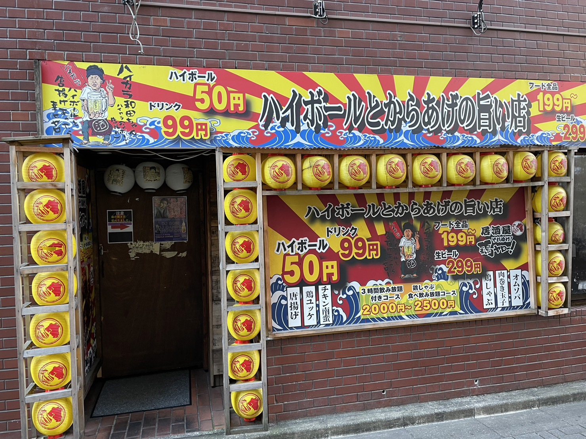
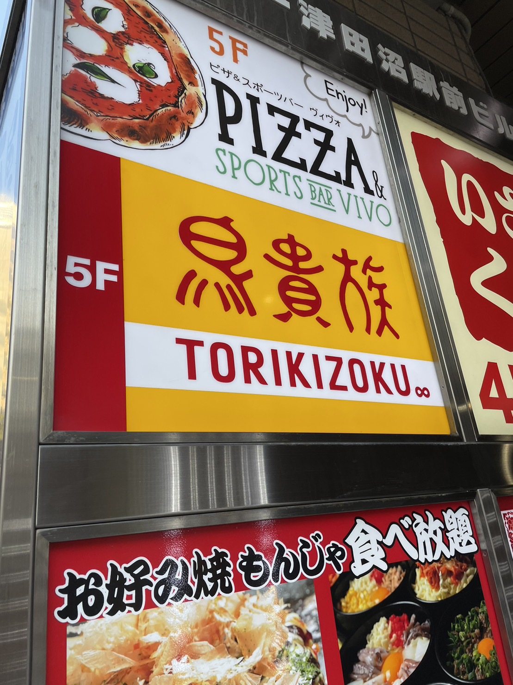

津田沼の居酒屋で楽しもう！
コスパ最強な居酒屋を紹介！
私がおすすめする津田沼のコスパ最強居酒屋 4選!!
一つ目のおすすめする居酒屋は
「鶏ヤロー」
です！ここは何といってもハイボールが50円やサワー200円などで激安すぎて恐ろしいくらい。

二つ目に紹介する居酒屋は
「鳥貴族」
鳥貴族はメニュー1品あたりの価格が安く、お得に楽しめるコスパの良い居酒屋として人気を博しています。
鳥貴族の価格設定はドリンクも含めて298円均一となっており、
注文の際も金額が分かりやすい明朗会計であるため、
予算を決めての食事も楽しみやすいのが特徴です。

おすすめのスーパーマーケット一覧!
１人暮らしをしている大学生は金銭的に余裕がない人が多いのではないでしょうか?
「食費や日用品をなるべく安く抑えたい!」「学校から近く、帰りに寄りやすいところがいい!」と考えている大学生にオススメな
津田沼駅周辺のスーパーマーケットを3つ程紹介したいと思います!
業務スーパー河内屋酒販 ミーナ津田沼店
イオン津田沼店
ダイエーモリシア津田沼店
業務スーパー河内屋酒販 ミーナ津田沼店
| 住所 | 〒275-0016 千葉県習志野市津田沼1-3-1 ミーナ津田沼1F |
| アクセス | JR津田沼駅から徒歩4分(350m)、新津田沼駅前 |
| オススメ理由 | 圧倒的価格の安さ |
イオン津田沼店
| 住所 | 〒275-0016 千葉県習志野市津田沼1-23-1 |
| アクセス | JR津田沼駅から徒歩7分、新津田沼駅北口から店舗2Fへ直結 |
| オススメ理由 | 食品売り場24時間営業 |
ダイエーモリシア津田沼店
| 住所 | 〒275-0026千葉県習志野市谷津1-16-1 |
| アクセス | JR津田沼駅南口から徒歩2分、新津田沼駅から徒歩10分 |
| オススメ理由 | 品揃え豊富。薬も充実 |